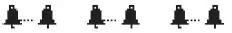
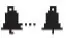

Anlage 6 Schallzeichen
Binnenschifffahrtsstraßen-Ordnung
Vorbemerkung: Die Schallzeichen, ausgenommen die Glockenschläge, bestehen in der Abgabe eines Tones oder mehrerer Töne hintereinander mit folgenden Merkmalen: – kurzer Ton: ein Ton von etwa einer Sekunde Dauer; – langer Ton: ein Ton von etwa vier Sekunden Dauer. Die Pause zwischen zwei aufeinanderfolgenden Tönen beträgt etwa eine Sekunde. Jedoch besteht das Zeichen „Folge von sehr kurzen Tönen“ aus einer Folge von mindestens sechs Tönen je von etwa einer Viertelsekunde Dauer, wobei die Pause zwischen den Tönen ebenso lang ist. Eine Gruppe von Glockenschlägen muss etwa vier Sekunden dauern. Sie kann durch Schläge von Metall auf Metall gleicher Dauer ersetzt werden.
A. Allgemeine Zeichen
▬ | 1 langer Ton | „Achtung“ | ||
■ | 1 kurzer Ton | „Ich richte meinen Kurs nach Steuerbord“ | ||
■ ■ | 2 kurze Töne | „Ich richte meinen Kurs nach Backbord“ | ||
■ ■ ■ | 3 kurze Töne | „Meine Maschine geht rückwärts“ | ||
■ ■ ■ ■ | 4 kurze Töne | „Ich bin manövrierunfähig“ | ||
▪▪▪▪▪▪▪▪▪ | Folge sehr kurzer Töne | „Gefahr eines Zusammenstoßes“ | ||
▬ ▬ | Wiederholte lange Töne | „Notsignal“ | § 4.04 Nummer 1 | |
 | Gruppe von Glockenschlägen | „Notsignal“ | § 4.04 Nummer 1 | |
▪ ▬ ▪ ▬ | Mindestens 15 Minuten lang ununterbrochene Wiederholung abwech- selnd eines kurzen und eines langen Tones in Verbindung mit dem Lichtzeichen nach § 4.01 Nummer 2 | „Bleib-Weg-Signal“ | § 8.09 Nummer 2 in Verbindung mit Nummer 1 |
B. Begegnungszeichen
Vorbeifahrt an Backbord verlangt | |||||
Normalfall: | ■ | 1 kurzer Ton | „Ich will an Backbord vorbeifahren“ | ||
des Bergfahrers | § 6.04 Nummer 4 Buchstabe a | ||||
■ | 1 kurzer Ton | „Einverstanden, fahren Sie an Backbord vorbei“ | |||
des Talfahrers | § 6.04 Nummer 5 | ||||
Abweichung: | ■ ■ | 2 kurze Töne | „Nicht einverstanden, fahren Sie an Steuerbord vorbei“ | ||
des Talfahrers | § 6.05 Nummer 2 Buchstabe b | ||||
■ ■ | 2 kurze Töne | „Einverstanden, ich werde an Steuerbord vorbeifahren“ | |||
des Bergfahrers | § 6.05 Nummer 3 Buchstabe b | ||||
Vorbeifahrt an Steuerbord verlangt | |||||
Normalfall: | ■ ■ | 2 kurze Töne | „Ich will an Steuerbord vorbeifahren“ | ||
des Bergfahrers | § 6.04 Nummer 4 Buchstabe b | ||||
■ ■ | 2 kurze Töne | „Einverstanden, fahren Sie an Steuerbord vorbei“ | |||
des Talfahrers | § 6.04 Nummer 5 | ||||
Abweichung: | ■ | 1 kurzer Ton | „Nicht einverstanden, fahren Sie an Backbord vorbei“ | ||
des Talfahrers | § 6.05 Nummer 2 Buchstabe a | ||||
■ | 1 kurzer Ton | „Einverstanden, ich werde an Backbord vorbeifahren“ | |||
des Bergfahrers | § 6.05 Nummer 3 Buchstabe a |
C. Überholzeichen
Überholen an Backbord des Vorausfahrenden verlangt | |||||
▬ ▬ ▪▪ | 2 lange Töne, | „Ich will auf Ihrer Backbordseite überholen“ | |||
2 kurze Töne | § 6.10 Nummer 2 Buchstabe a | ||||
des Überholenden | |||||
Normalfall: | Kein Zeichen | „Einverstanden, Sie können auf meiner Backbordseite überholen“ | |||
des Vorausfahrenden | § 6.10 Nummer 3 | ||||
Abweichung: | ■ ■ | 2 kurze Töne | „Nicht einverstanden, überholen Sie auf meiner Steuerbordseite“ | ||
des Vorausfahrenden | § 6.10 Nummer 4 Satz 1 Buchstabe b | ||||
■ | 1 kurzer Ton | „Einverstanden, ich werde auf Ihrer Steuerbordseite überholen“ | |||
des Überholenden | § 6.10 Nummer 4 Satz 2 Buchstabe b | ||||
Überholen an Steuerbord des Vorausfahrenden verlangt | |||||
2 lange Töne, | „Ich will auf Ihrer Steuerbordseite überholen“ | ||||
1 kurzer Ton | § 6.10 Nummer 2 Buchstabe b | ||||
des Überholenden | |||||
Normalfall: | Kein Schallzeichen | „Einverstanden, Sie können auf meiner Steuerbordseite überholen“ | |||
des Vorausfahrenden | § 6.10 Nummer 3 | ||||
Abweichung: | ■ | 1 kurzer Ton | „Nicht einverstanden, überholen Sie auf meiner Backbordseite“ | ||
des Vorausfahrenden | § 6.10 Nummer 4 Satz 1 Buchstabe a | ||||
■ ■ | 2 kurze Töne | „Einverstanden, ich werde auf Ihrer Backbordseite überholen“ | |||
des Überholenden | § 6.10 Nummer 4 Satz 2 Buchstabe a | ||||
Unmöglichkeit des Überholens | |||||
■ ■ ■ ■ ■ | 5 kurze Töne | „Man kann mich nicht überholen“ | |||
des Vorausfahrenden | § 6.10 Nummer 5 |
D. Wendezeichen
▬ ▪ | 1 langer Ton, | „Ich wende über Steuerbord“ | |||
1 kurzer Ton | § 6.13 Nummer 2 Buchstabe a, § 6.16 Nummer 2 Buchstabe c Doppelbuchstabe aa | ||||
▬ ▪▪ | 1 langer Ton, | „Ich wende über Backbord“ | |||
2 kurze Töne | § 6.13 Nummer 2 Buchstabe b, § 6.16 Nummer 2 Buchstabe c Doppelbuchstabe bb |
E. Zeichen bei der Einfahrt in und der Ausfahrt aus Häfen und Nebenwasserstraßen
▬ ▬ ▬ ▪ | 3 lange Töne, | „Ich will meinen Kurs nach Steuerbord richten“ | |||
1 kurzer Ton | § 6.16 Nummer 2 Satz 1 Buchstabe a | ||||
▬ ▬ ▬ ▪▪ | 3 lange Töne, | „Ich will meinen Kurs nach Backbord richten“ | |||
2 kurze Töne | § 6.16 Nummer 2 Satz 1 Buchstabe b | ||||
▬ ▬ ▬ | 3 lange Töne | „Ich will überqueren“ | |||
§ 6.16 Nummer 2 Satz 1 Buchstabe c |
F. (ohne Inhalt)
G. Zeichen bei unsichtigem Wetter
a) Einzeln fahrendes Fahrzeug und Verband, das oder der kein Radar benutzt | |||||
▬ | 1 langer Ton, längstens jede Minute wiederholt | § 6.33 Nummer 2 Satz 1, § 6.34 Nummer 3, auch in Verbindung mit Nummer 8 Satz 1 | |||
b) (ohne Inhalt) | |||||
c) Fahrzeug in der Radarfahrt, wenn kein Sprechfunkkontakt zustande kommt | |||||
▬ | 1 langer Ton, wiederholt | § 6.32 Nummer 2 Buchstabe d Doppelbuchstabe aa | |||
d) Stillliegendes Fahrzeug | |||||
 | 1 Gruppe von Glockenschlägen, längstens jede Minute wiederholt | § 6.31 Nummer 2, auch in Verbindung mit Nummer 3 Satz 2 |